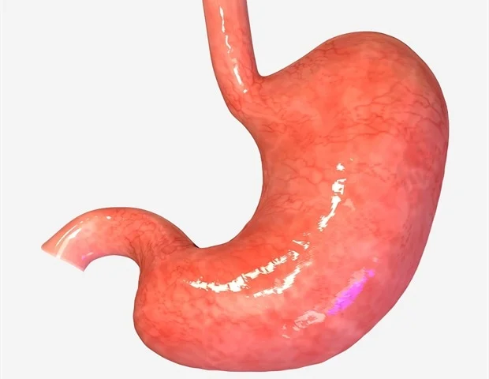

The Stomach
Your stomach is a muscular organ that digests food. It is part of your gastrointestinal (GI) tract. When your stomach receives food, it contracts and produces acids and enzymes that break down food. When your stomach has broken down food, it passes it to your small intestine.
Overview What is the stomach?
The stomach is a J-shaped organ that digests food. It produces enzymes (substances that create chemical reactions) and acids (digestive juices). This mix of enzymes and digestive juices breaks down food so it can pass to your small intestine. Your stomach is part of the gastrointestinal (GI) tract. The GI tract is a long tube that starts at your mouth. It runs to your anus, where stool (poop) leaves your body. The GI tract is a key part of your digestive system.
Function What is the stomach’s function?
Your stomach’s purpose is to digest food and send it to your small intestine. It has three functions: Temporarily store food. Contract and relax to mix and break down food. Produce enzymes and other specialized cells to digest food.
How does the stomach work with the rest of the GI tract?
Each part of your GI tract breaks down food and liquid and carries it through your body. During the digestive process, your body absorbs nutrients and water. Then, you expel the waste products of digestion through your large intestine. Food moves through your GI tract in a few steps: Mouth: As you chew and swallow, your tongue pushes food into your throat. A small piece of tissue called the epiglottis covers your windpipe. The epiglottis prevents choking. Esophagus: Food travels down a hollow tube called the esophagus. At the bottom, your esophageal sphincter relaxes to let food pass to your stomach. (A sphincter is a ring-shaped muscle that tightens and loosens.) Stomach: Your stomach creates digestive juices and breaks down food. It holds food until it is ready to empty into your small intestine. Small intestine: Food mixes with the digestive juices from your intestine, liver and pancreas. Your intestinal walls absorb nutrients and water from food and send waste products to the large intestine. Large intestine: Your large intestine turns waste products into stool. It pushes the stool into your rectum. Rectum: The rectum is the lower portion of your large intestine. It stores stool until you have a bowel movement.
Anatomy Where is the stomach located?
Your stomach sits in your upper abdomen on the left side of your body. The top of your stomach connects to a valve called the esophageal sphincter (a muscle at the end of your esophagus). The bottom of your stomach connects to your small intestine.
How big is your stomach?
The size of the stomach varies from person to person. Your stomach expands when full and deflates when empty. Because of this, your stomach size can vary depending on how recently and how much you have eaten.
What are the parts of the stomach’s anatomy?
Your stomach has five distinct sections: The cardia is the top part of your stomach. It contains the cardiac sphincter, which prevents food from traveling back up your esophagus. The fundus is a rounded section next to the cardia. It's below your diaphragm (the dome-shaped muscle that helps you breathe). The body (corpus) is the largest section of your stomach. In the body, your stomach contracts and begins to mix food. The antrum lies below the body. It holds food until your stomach is ready to send it to your small intestine. The pylorus is the bottom part of your stomach. It includes the pyloric sphincter. This ring of tissue controls when and how your stomach contents move to your small intestine.
What is the stomach’s structure?
everal layers of muscle and other tissues make up your stomach: Mucosa is your stomach’s inner lining. When your stomach is empty, the mucosa has small ridges (rugae). When your stomach is full, the mucosa expands, and the ridges flatten. Submucosa contains connective tissue, blood vessels, lymph vessels (part of your lymphatic system) and nerve cells. It covers and protects the mucosa. Muscularis externa is the primary muscle of your stomach. It has three layers that contract and relax to break down food. Serosa is a layer of membrane that covers your stomach.
Conditions and Disorders What conditions and disorders affect your stomach?
Gastrointestinal diseases may affect your stomach. You may have gastrointestinal symptoms only under specific circumstances, such as getting heartburn during pregnancy. Or you may have a chronic (long-lasting) condition. Common conditions that affect your stomach include: Gastric ulcers: Erosion in your stomach’s lining that can lead to pain and bleeding. Gastritis: Stomach inflammation. Gastroesophageal reflux disease (GERD): When stomach contents travel up to your esophagus, causing heartburn or coughing. Gastroparesis: Nerve damage that affects your stomach’s muscle contractions. Indigestion (dyspepsia): Discomfort, pain or burning in your upper stomach. Peptic ulcer disease: Ulcers (sores) in either your stomach or the first portion of your small intestine (duodenum). Stomach cancer: When cancerous cells grow uncontrollably in your stomach.
Care How can I keep my stomach healthy?
You can make lifestyle changes to keep your stomach and digestive system healthy. You may: Drink alcohol only in moderation. Drink at least 50 ounces of water daily, depending on your activity level and size. Eat 25 to 35 grams of fiber daily, depending on your age and sex. Exercise regularly. Limit your intake of processed foods. Manage stress with healthy coping strategies, such as meditation. Quit smoking or using tobacco products.
Additional Common Questions What should I ask my doctor about my stomach?
If you have chronic stomach symptoms, you may speak with a gastroenterologist. Gastroenterologists are doctors who specialize in treating the digestive system. You may ask: What is the most likely cause of gastrointestinal symptoms? What tests will you use to diagnose a stomach condition? Are there any over-the-counter medications that can relieve symptoms? Should I make changes to my diet?
When should I call my doctor?
Call your healthcare provider right away if you have: Chest pain. Fever. Nausea and vomiting. Pus or blood in your stool. Severe dehydration or diarrhea. Sudden and intense abdominal pain.
A note from Cleveland Clinic
Your stomach is a muscular organ in your upper abdomen. It is part of your GI tract. During digestion, your stomach contracts, relaxes and produces acids that help break down food. Your stomach size can vary depending on when and how much you have eaten. You can keep your stomach and digestive system healthy by eating healthy foods, exercising and managing stress. Return to previous page